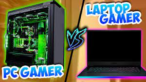

Diferencias
- En una PC es más fácil cambiar los componentes que en un portátil.
- El portátil es más ligero que un ordenador de sobremesa.
- Las laptops usan menos energía que un ordenador de escritorio.
- Los ordenadores de sobremesa son más baratos y permiten jugar con los componentes, mientras que en laptops los componentes son más caros y difíciles de cambiar.
El encarecimiento de las laptops
- Uno de ellos son los componentes limitados, que ya nombramos antes.
- Desde la pandemia del 2020 subieron muchísimo por el teletrabajo.
- Otra de las ventajas es su portabilidad, el poder llevarla de un lado a otro, etc.
- La independencia de la energía, que cuenta con una batería y permite enchufarla cuando se agote.
